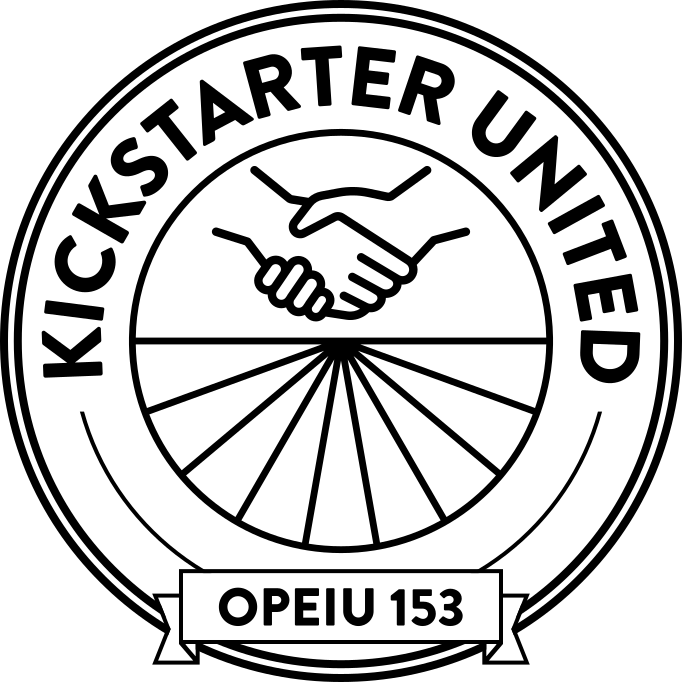

On February 18th, 2020, Kickstarter employees voted to form a union, becoming the first major tech company in the United States to do so. We took this step in order to invest deeply in our collective future at the company we love, to create a workplace that is safer and more equitable for all, and to support organizing efforts across the tech industry and the many creative communities our work touches. We are proud to call ourselves members of OPEIU Local 153.
There is nowhere better-suited than Kickstarter to understand the elation of completing a successful campaign while knowing that the real work is still ahead. As we begin bargaining our first contract, we will remain true to the values that informed our organizing: transparency, inclusion, solidarity, accountability, and joy.
The pillars around which we organized include:
Since its founding, Kickstarter has been a progressive, forward-thinking corporate player. In 2015, the company was reincorporated as a Public Benefit Corporation. This framework recognizes that our responsibility extends well beyond shareholders, committing us as a company to the pursuit of just, responsible, and equitable business practices. We believe that unionizing furthers these aims, while also allowing us to advocate for workers’ rights, which is an inherent aspect of fighting inequality. Utilizing workers’ collective power to improve our workplace is a natural extension of Kickstarter’s mission, encouraging every employee to safeguard and enrich our charter commitments to creativity, equity, and a positive impact on society.
On June 17th, 2022, our bargaining unit overwhelmingly voted YES to ratify our first collective bargaining agreement. It went into effect on July 14th, 2022, and expires on July 13th, 2025. Thank you for all of your support during our first contract campaign, it has meant the world to us.